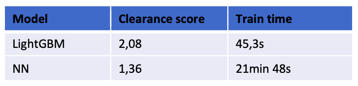

Caged Shipments Prediction
Jan 2022 ~ Internship at FedEx Express
Length: 2mo (at 0.5 FTE)
Programming language: Python (Pandas, NumPy, Matplotlib, Plotly, scikit-learn, LightGBM)
Data: over 600.000 shipped parcels having 742 features, including the
target variable - whether the parcel was caged
Problem description:
Develop a LightGBM model for classifying whether a shipment will be caged (secured until
the correct information is obtained)
Approach:
Since the data was cleaned previously, the first step involved slicing it into train and test sets.
Then, a LightGBM model was created, and its hyperparameters were first tuned through a Random Search.
The options in the grid were selected according to the official documentation and considering
the balance between overfitting, performance, and training speed. Afterward, the best parameters
obtained from the Random Search were put in a new grid next to other values in their close vicinity.
The respective grid was used to optimize the hyperparameters one more time through Grid Search.
Using the best hyperparameters followed from Grid Search, the model was fitted another time until
the learning curve of the validation data reached a plateau to see after how many
iterations the loss converges. Finally, the model was fitted on both the train and validation data.
Results:
An accuracy of 81% was observed after evaluating the predictions on the test data. However,
the company uses a custom, greater-is-better score for this problem called the clearance score.
The LightGBM achieved a clearance score of 2.08, outperforming the
deployed Neural Network by 53%. Moreover, the LightGBM model was trained in only 45 seconds,
while the Neural Network took approximately 22 minutes. Accordingly, the former was 29 times
faster.
